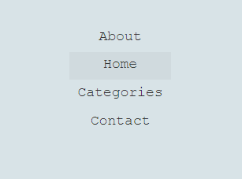
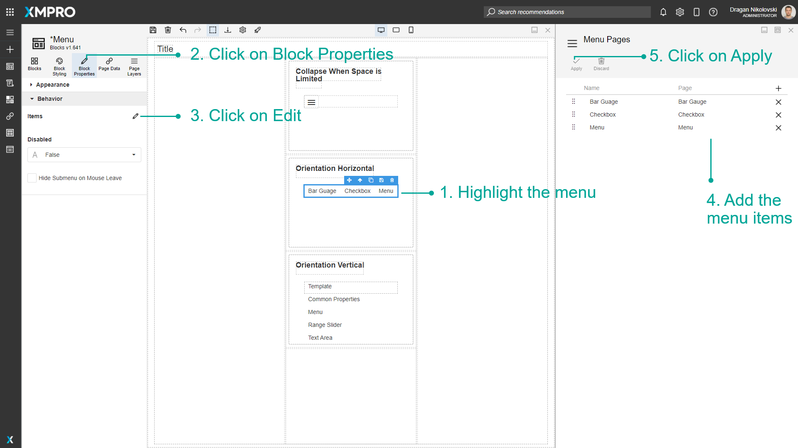
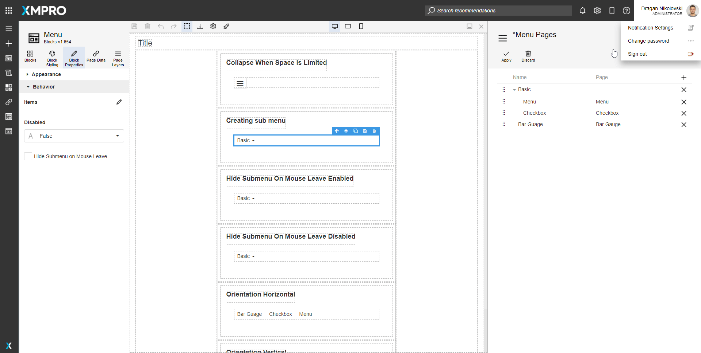
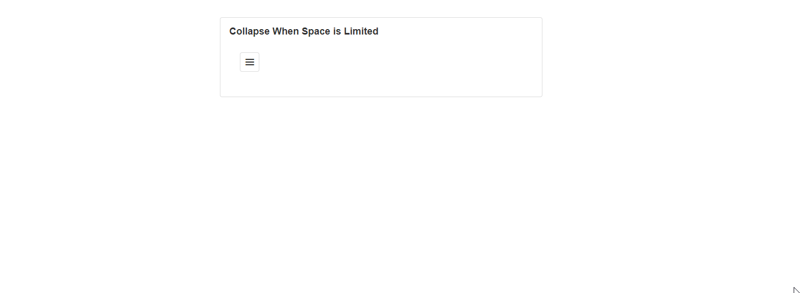
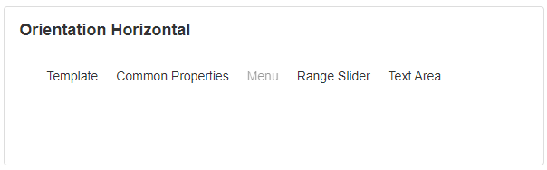
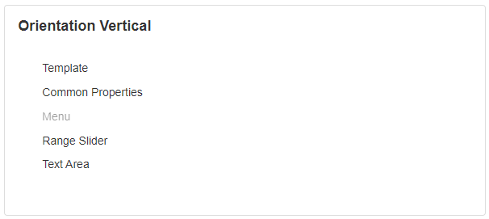

Menu
A Menu is a list of options, commands, or pages presented to the user that they can select. This can be used for navigation purposes, such as separating the app or page into sections that the user can be directed to.

Adding Menu Items
Once a Menu Block has been added to the screen, menu items can be added by using the Items property under Behavior in Block Properties. A separate area will open that will allow you to add items to your Menu. Here you can specify the text that will display on the link, and the page the app will navigate to when the user clicks on the link.

To edit an item, click the item on the grid, and edit mode will be enabled.
Menu items can be reordered and moved inside to create a submenu by clicking the left icon and dragging it into position.

Menu Properties
Appearance
Common Properties
The menu has properties that are common to most Blocks: visibility and tooltips,
See the Common Properties article for more details on common appearance properties.
Options that are specific to the Menu include collapse when space is limited, orientation, and submenu direction.
Collapse When Space is Limited
If the width of the menu is longer than the screen, it will collapse. Applies only if the orientation is "horizontal".

Orientation


Behavior
Common Properties
The disabled property is common to most Blocks;
See the Common Properties article for more details on common behavior properties.
Items
The Items section is used to configure the menu items. If Menu is left unconfigured, by default it will display all the pages of the app.
Hide Submenu on Mouse Leave
Hide submenu on mouse leave is when we have a submenu and if this option is enabled it will collapse the menu, otherwise, a click is required to close the menu.

Last modified: May 24, 2025